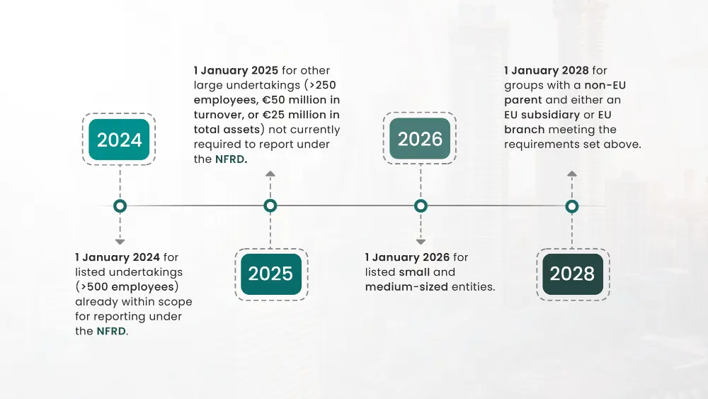

The Corporate Sustainability Reporting Directive (CSRD) put forward by the European Commission introduces one of the most significant changes to sustainability reporting in companies operating within the EU. Despite the UK's withdrawal from the EU, the CSRD may impact UK companies due to its extra-territorial application.
The companies falling within the scope of CSRD will be expected to include detailed ESG disclosures in their narrative reports. These disclosures build on and significantly expand, from the disclosures required under the EU's Non-Financial Reporting Directive 2014/95/EU (NFRD) as implemented in the United Kingdom through sections 414CA and 414CB of the Companies Act 2006, Contents of strategic report.
While CSRD is primarily aimed at businesses located within the EU, the impact of the directive upon companies based in the UK extends to some significant areas.
Scope and Compliance Requirements:
UK businesses must evaluate their situation and see if they meet the CSRD and whether they fall within the scope of the CSRD based on these criteria:
Listed Securities on EU markets: UK companies with securities listed on EU-regulated markets must comply with CSRD reporting obligations, regardless of location.
Net turnover criteria: UK companies exceeding €150 million in net turnover in the EU over the last two consecutive financial years are subject to CSRD if they have:
- An EU subsidiary with listed securities or qualifying as a large undertaking meets two of the financial criteria: (i) Total assets of €20 million, (ii) Net turnover of €40 million, or (iii) An average of 250 employees throughout the financial year.
- An EU branch with a net turnover exceeding €40 million in the previous financial year.
UK Compliance Timelines

CSRD Data and Assurance Requirements for UK Companies
The CSRD requires limited assurance over sustainability reporting for companies within its scope. This applies to EU companies and some non-EU companies with significant EU operations. For companies to comply with CSRD, they must adhere to specific data standards which include providing information regarding sustainability risks, effects and chances. They will also need to prepare their reports for assurance by other parties helping them ascertain the reliability or correctness of what they have disclosed.
Broader Implications
The UK has been a global leader in fostering sustainability reporting through initiatives like adopting the Task Force on Climate-related Financial Disclosures (TCFD). From 2022, large companies in the UK are obliged to report in line with TCFD recommendations, ensuring the country's commitment to promoting transparency and accountability in environmental, social, and governance (ESG) practices.
Looking ahead, the UK plans to adopt the International Sustainability Standards Board (ISSB) standards, to develop its own UK-specific Sustainability Reporting Standards (UK SRS) by January 1, 2026. This shift reflects the UK's strategy to move away from EU-derived regulations towards a tailored framework that aligns with global best practices while meeting domestic regulatory needs.
Importantly, companies preparing for CSRD compliance will find synergies with ISSB disclosures, as both standards are designed to be interoperable.
This alignment simplifies reporting obligations for organizations conducting business in both the UK and EU, streamlining efforts to meet evolving regulatory requirements and enhancing global sustainability practices. This assertive approach signals the UK's proactive stance in shaping the future of sustainability reporting globally.
The Business Benefits for UK Companies Pursuing CSRD Compliance
To meet the extended reporting requirements of the CSRD, UK businesses with meaningful operations within the EU must get ready. This comprises evaluating their situations, equipping them with ESG tools to minimize the comprehensive data collection, and orientating their ESG policies to conform to the provisions of the directive. It means that non-conformity is not only incarnated in the breaking of the law but also in making companies find themselves in uncomfortable positions within an ever more conscious market about sustainability.
Regulations for sustainability reporting are expected to become more comprehensive over time. Therefore, the better prepared an organization is to meet future sustainability requirements, the quicker it embraces and adapts to these shifting regulatory environments.
Guide to navigating the requirements introduced by the CSRD:
- Determine the in-scope status of your group entities: Identify EU-incorporated or turnover-generating entities of your group, assess their CSRD compliance, and guarantee that reporting is adequately transparent so as to not miss subsidiaries or activities.
- Conduct a double materiality assessment: Conduct a comprehensive double materiality assessment of your operations' material impacts on sustainability and issues will help prioritize relevant topics for disclosure under CSRD. Align your organization's policies, KPIs, and targets with the identified sustainability materiality issues to ensure a transparent and effective approach to sustainability reporting.
- Compare disclosure requirements: Compare your current state with the new disclosure requirements to understand what gaps should be covered to be CSRD compliant. Develop an implementation roadmap that defines how these gaps will be covered. Identify responsible stakeholders within your organization and describe how these changes will be implemented.
- Seamless data collection by ESG tools: The significance of ESG software lies in its ability to eliminate a lot of manual work associated with collecting and compiling sustainability data. While assessing ESG software vendors, the company must investigate characteristics like the capacity for data integration, reporting features, scalability, and user interface. Choose ESG software that best fits your organizational needs and CSRD requirements and deploy accordingly to effectively capture sustainability data while ensuring complete staff training for proper software use.